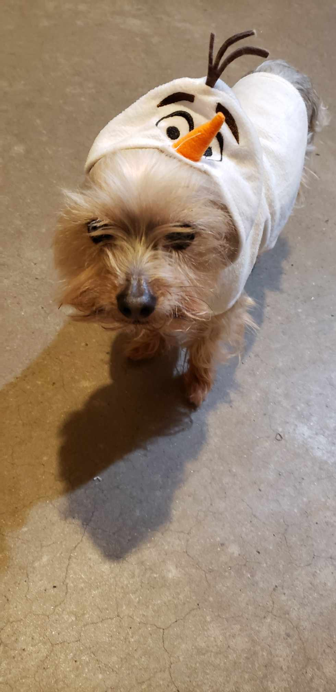
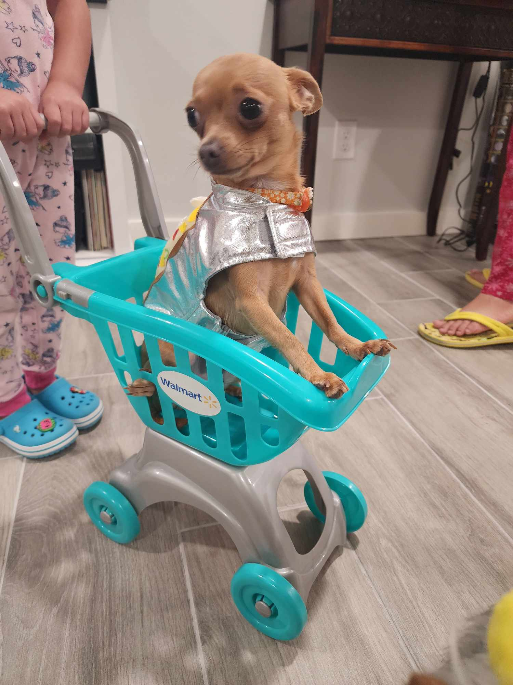
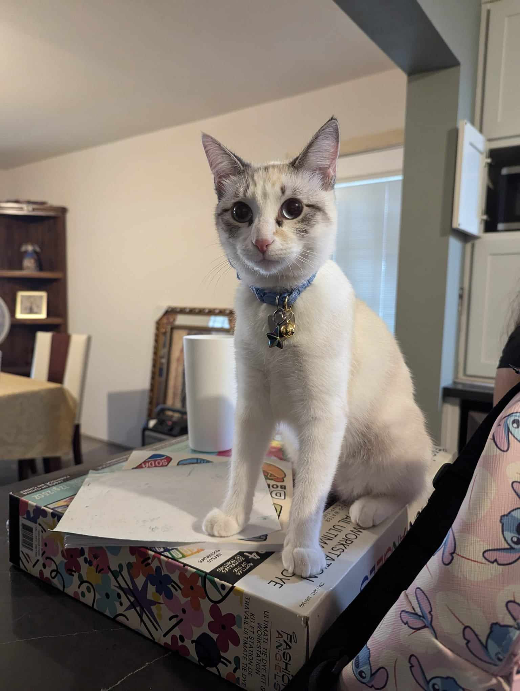

Hey there! I'm Joanna Rios.
This page is gonna be an all about me.
I'll talk about music, aesthetics, things I love, etc.
If I had to describe myself in three words, they'd be dreamer, introvert, determined.
Check this out! This is a spotify playlist with some of my favorites!! Give this a listen!
| My Yorkie | My Chihuahua | My Cat |
|---|---|---|
| I've had him for over half of my life. He's 12 years old, but he'll always be my baby. |
She's my little gremlin. She's the sweetest unless you're tying to take her food... which I can totally relate to. |
She's the newest addition. She found me in the midst of freaking out about finally coming back to school. She's my peace and stress. |
|  |  |  |
Had to share some picture of them because who doesn't love seeing pet pictures.
Talking about them is basically talking about myself because they're my everything
I love them so much. They make me the happiest...and sometimes the maddest lol.